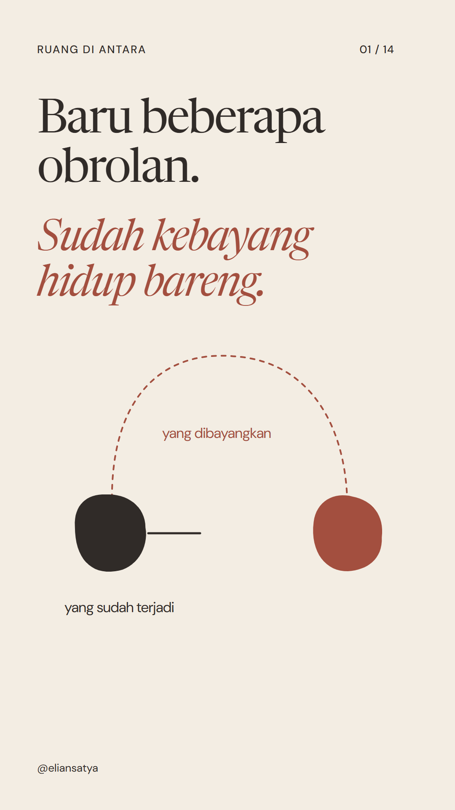
0–5 detik · 5 detik
01: Baru beberapa obrolan
Pengalaman yang masih sedikit berdampingan dengan masa depan yang sudah dibayangkan.
Narasi
Dari beberapa obrolan, lo udah kebayang hidup bareng dia.
Ruang di Antara · Limerence · Storyboard v1
14 komposisi statis untuk meninjau alur, teks, dan hubungan antar-bentuk. Klik gambar untuk melihat ukuran penuh; buka “Narasi” untuk membaca bagian naskahnya.

Pengalaman yang masih sedikit berdampingan dengan masa depan yang sudah dibayangkan.
Dari beberapa obrolan, lo udah kebayang hidup bareng dia.
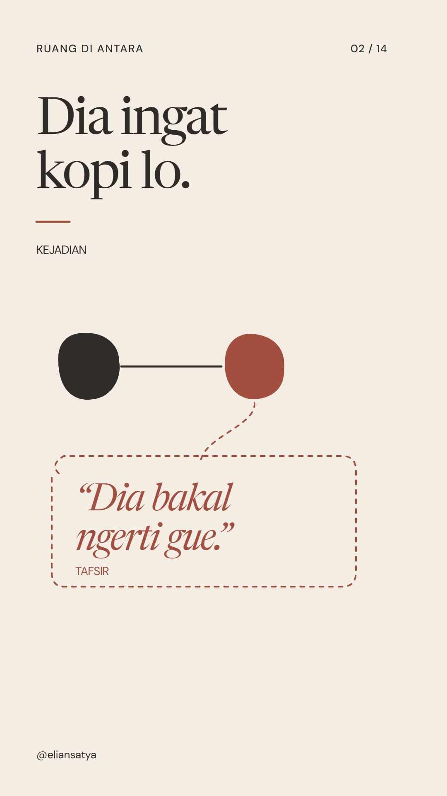
Perhatian kecil adalah kejadian. Kesimpulan tentang kecocokan masih perlu diuji.
Dia inget pesanan kopi lo. Di kepala lo, itu jadi tanda: “Dia pasti bakal ngerti gue.”
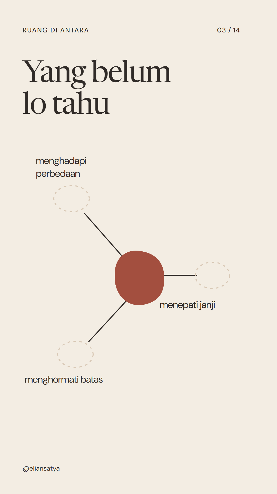
Perbedaan, janji, dan batas: ada sisi dirinya yang belum lo alami langsung.
Padahal, lo belum tahu gimana dia menghadapi perbedaan, menepati janji, atau menghormati batas.
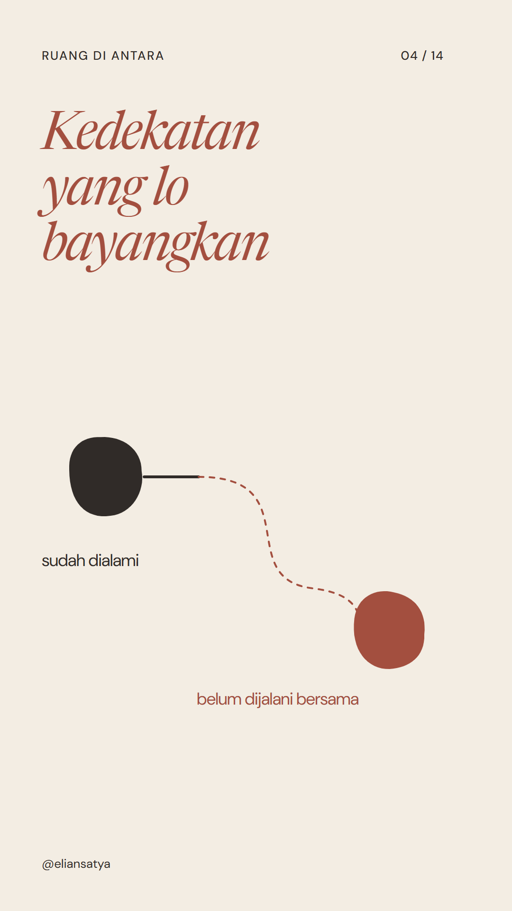
Garis solid menandai pengalaman; perpanjangan putus-putus menandai bayangan.
Ada kedekatan yang belum kalian alami, tapi sudah lo isi sendiri.
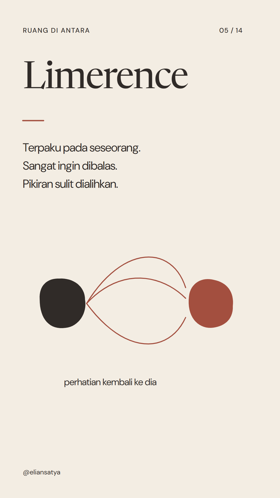
Konsep dikenalkan setelah situasinya terasa dekat, tanpa memberi diagnosis.
Dalam pembahasan limerence, orang bisa terpaku pada seseorang, sangat ingin perasaannya dibalas, dan terus kepikiran meski ingin mengalihkan perhatian.
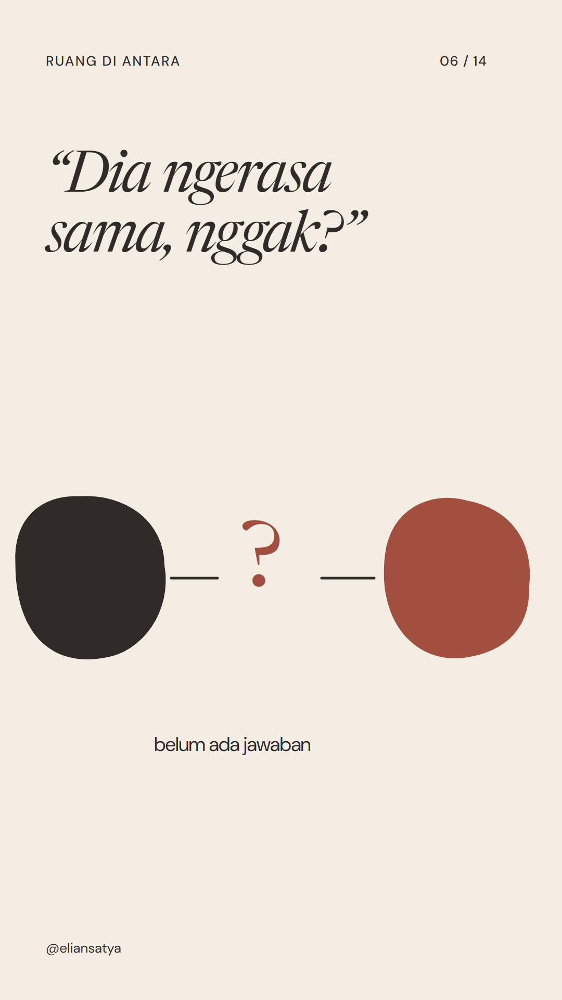
Pertanyaan dibiarkan terbuka; perasaan orang lain belum kita ketahui.
Ketidakpastian soal perasaan dia bisa ikut memenuhi pikiran.
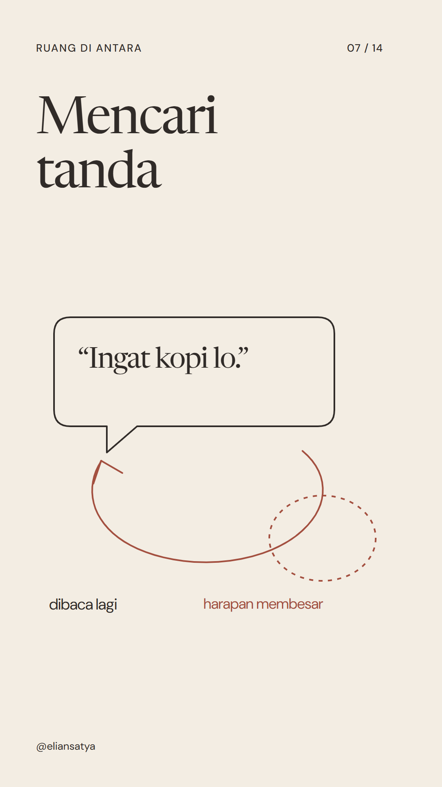
Membaca ulang percakapan menjadi contoh pencarian tanda.
Misalnya, lo baca ulang percakapan buat mencari tanda. Satu respons hangat bikin harapan membesar.
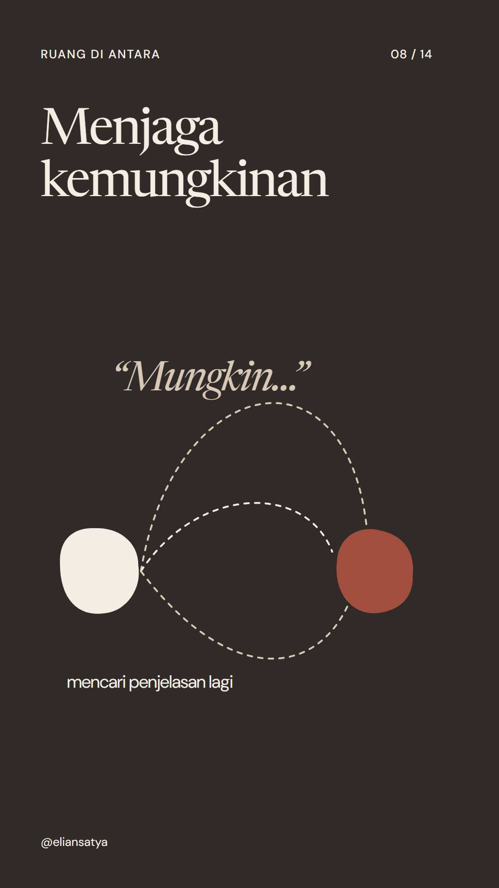
Satu frame arang memberi tekanan saat berbagai tafsir menjaga kemungkinan.
Saat responsnya berubah, lo sibuk mencari penjelasan supaya kemungkinan itu tetap ada.
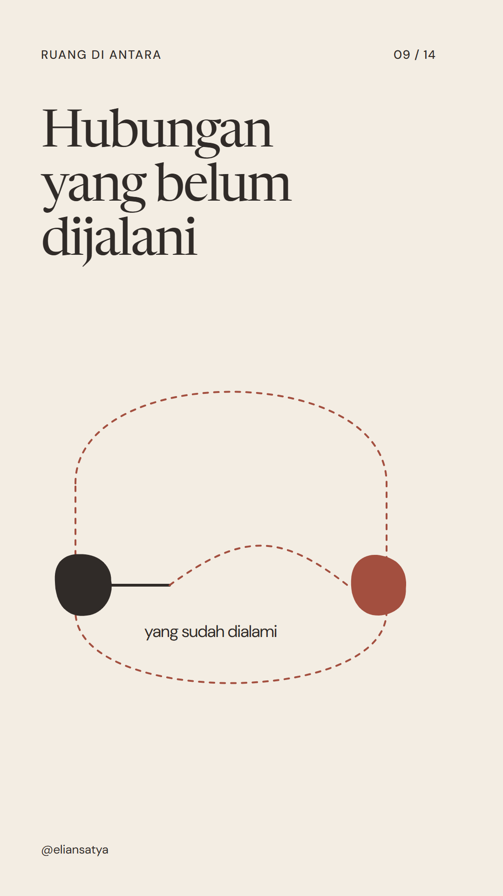
Yang dibayangkan tampak lebih besar daripada pengalaman yang sudah dibagikan.
Yang lo ulang di kepala: versi hubungan yang belum pernah kalian jalani.
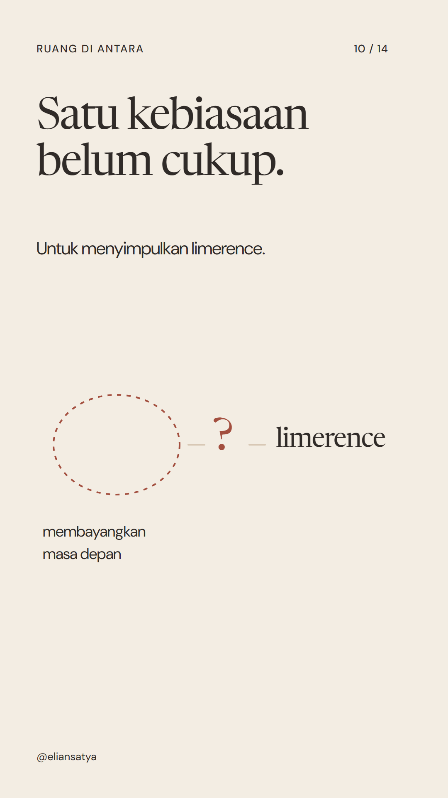
Berfantasi tentang masa depan saja belum cukup untuk menyimpulkan limerence.
Membayangkan masa depan saja belum cukup buat menyimpulkan limerence.
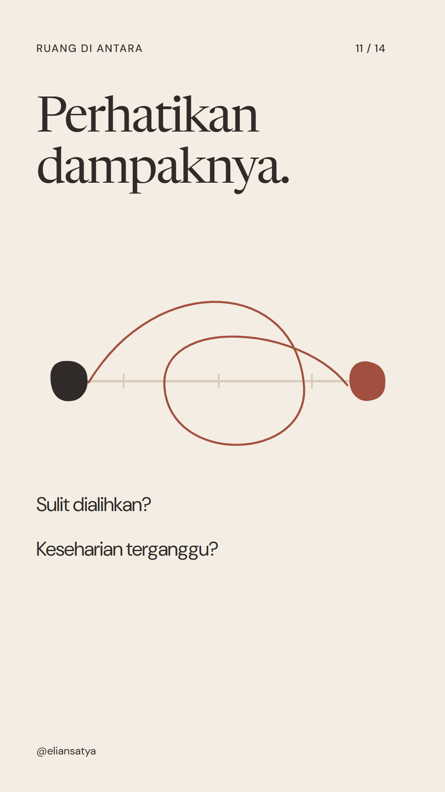
Dua pertanyaan refleksi tentang perhatian dan dampaknya pada keseharian.
Perhatikan juga: seberapa sulit pikiran itu dialihkan, dan apa dampaknya ke keseharian lo?
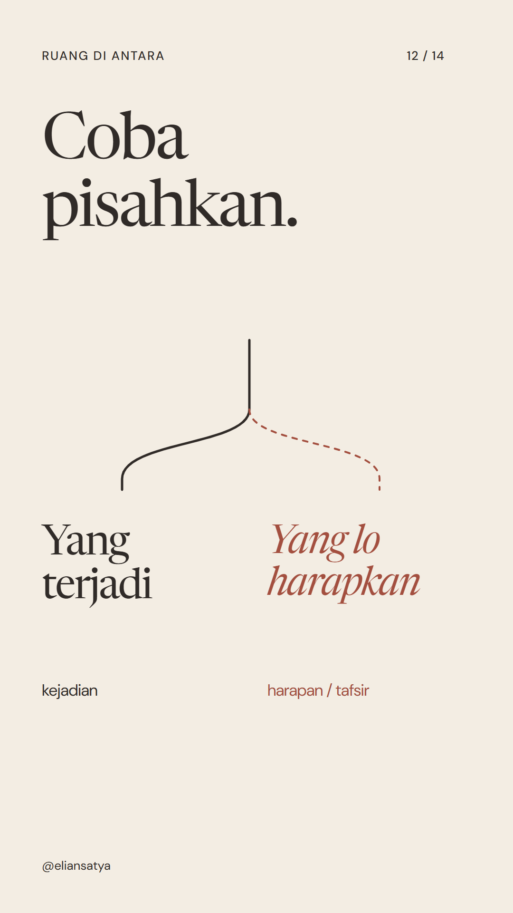
Pisahkan kejadian dari harapan yang dilekatkan padanya.
Coba pisahkan: apa yang dia lakukan, dan apa yang lo harapkan dari tindakan itu.
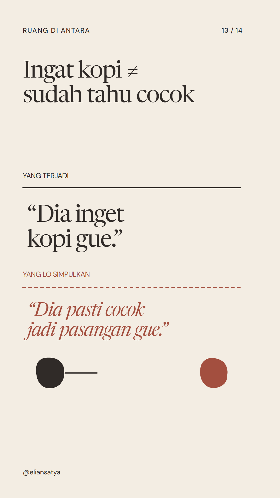
Contoh kopi kembali untuk memperjelas perbedaan kejadian dan kesimpulan.
“Dia inget kopi gue” itu kejadian. “Dia pasti cocok jadi pasangan gue” masih kesimpulan yang perlu diuji lewat saling mengenal.
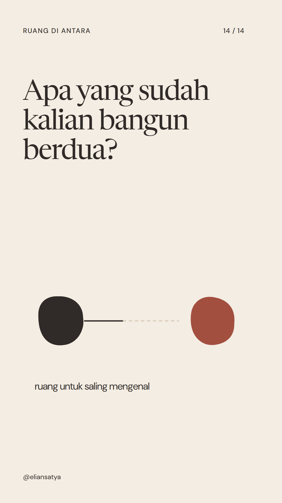
Pertanyaan penutup memberi ruang bagi pengalaman yang benar-benar dibangun berdua.
Bagian mana dari kedekatan ini yang sudah kalian bangun berdua?